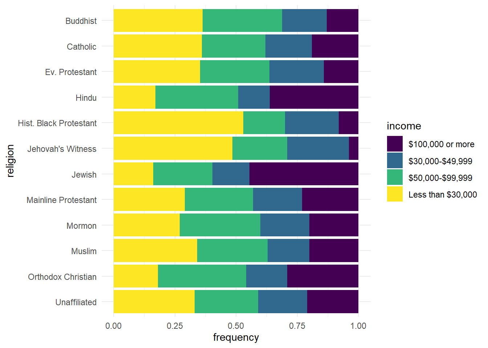
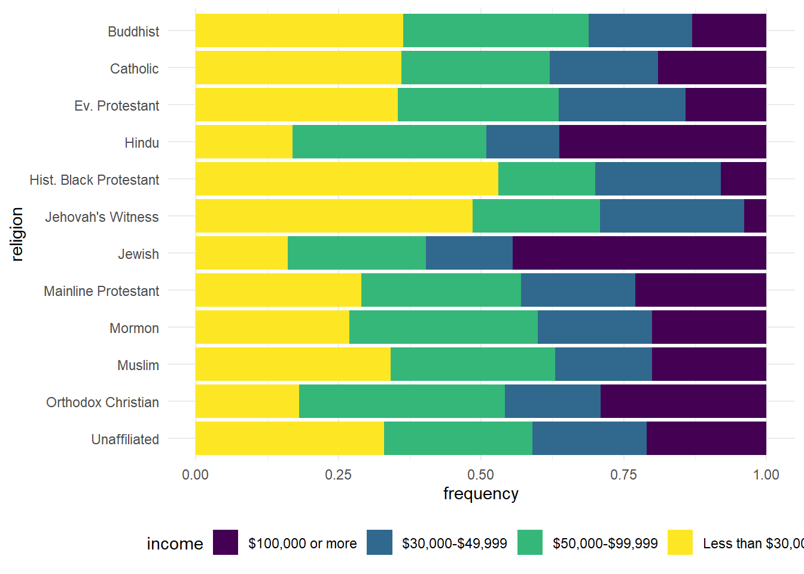
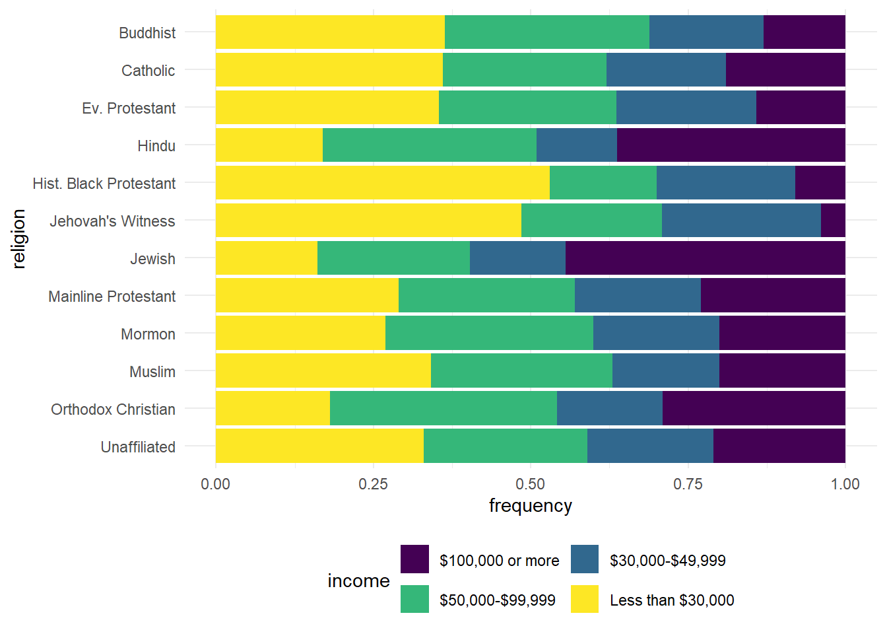
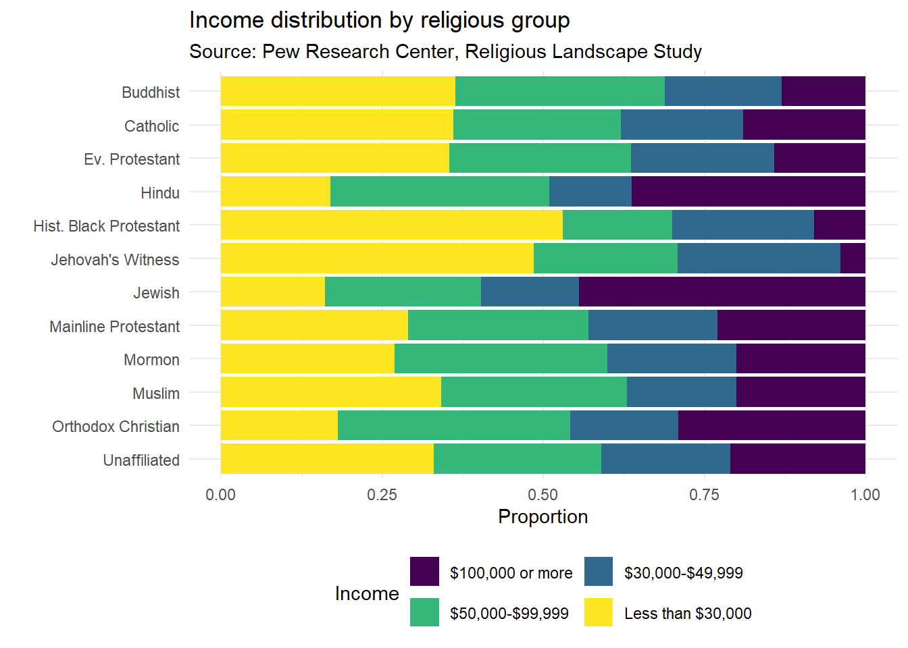

0.1 Import Relig-income.csv
library(readxl)
library(tidyverse)
rel_inc <- read_excel("relig-income.xlsx")
rel_inc_long <- rel_inc %>%
rename(
religion = `Religious tradition`,
n = `Sample Size`
) %>%
pivot_longer(
cols = -c(religion, n),
names_to = "income",
values_to = "proportion"
) %>%
mutate(frequency = round(proportion * n))0.2 Visualise using GGPLOT
rel_inc_long <- rel_inc_long %>%
mutate(religion = case_when(
religion == "Evangelical Protestant" ~ "Ev. Protestant",
religion == "Historically Black Protestant" ~ "Hist. Black Protestant",
religion == 'Unaffiliated (religious "nones")' ~ "Unaffiliated",
TRUE ~ religion
))
rel_inc_long <- rel_inc_long %>%
mutate(religion = fct_rev(religion))
ggplot(rel_inc_long, aes(y = religion, x = frequency, fill = income)) +
geom_col(position = "fill") +
scale_fill_viridis_d() +
theme_minimal()
ggplot(rel_inc_long, aes(y = religion, x = frequency, fill = income)) +
geom_col(position = "fill") +
scale_fill_viridis_d() +
theme_minimal() +
theme(legend.position = "bottom")
ggplot(rel_inc_long, aes(y = religion, x = frequency, fill = income)) +
geom_col(position = "fill") +
scale_fill_viridis_d() +
theme_minimal() +
theme(legend.position = "bottom") +
guides(fill = guide_legend(nrow = 2, byrow = TRUE))
ggplot(rel_inc_long, aes(y = religion, x = frequency, fill = income)) +
geom_col(position = "fill") +
scale_fill_viridis_d() +
theme_minimal() +
theme(legend.position = "bottom") +
guides(fill = guide_legend(nrow = 2, byrow = TRUE)) +
labs(
x = "Proportion", y = "",
title = "Income distribution by religious group",
subtitle = "Source: Pew Research Center, Religious Landscape Study",
fill = "Income"
)